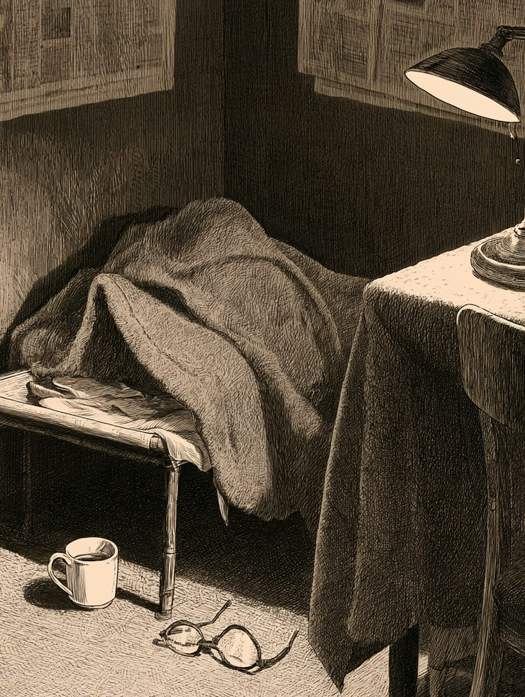
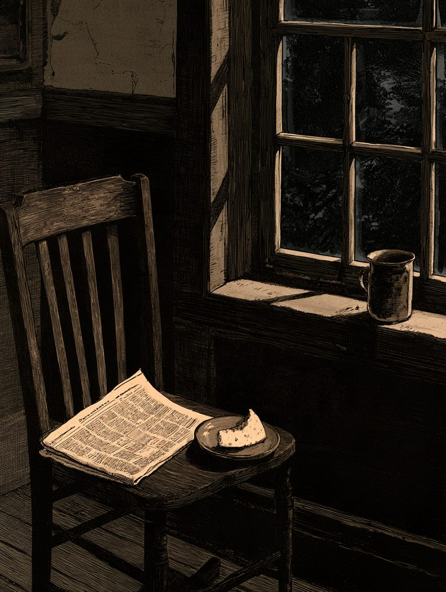
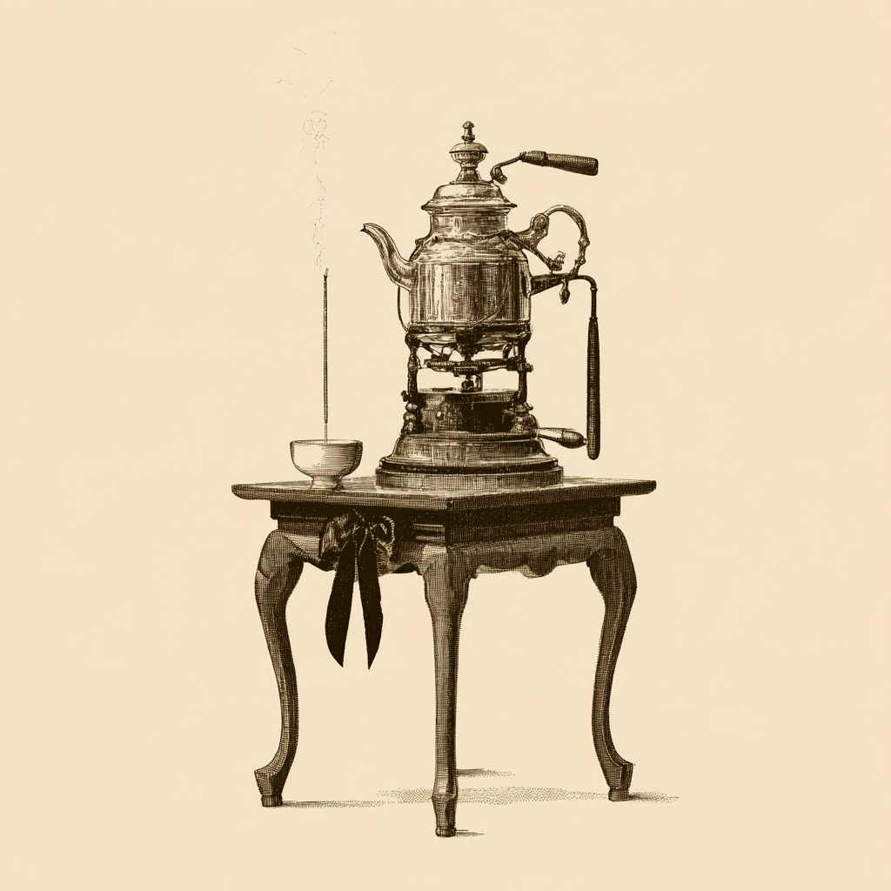
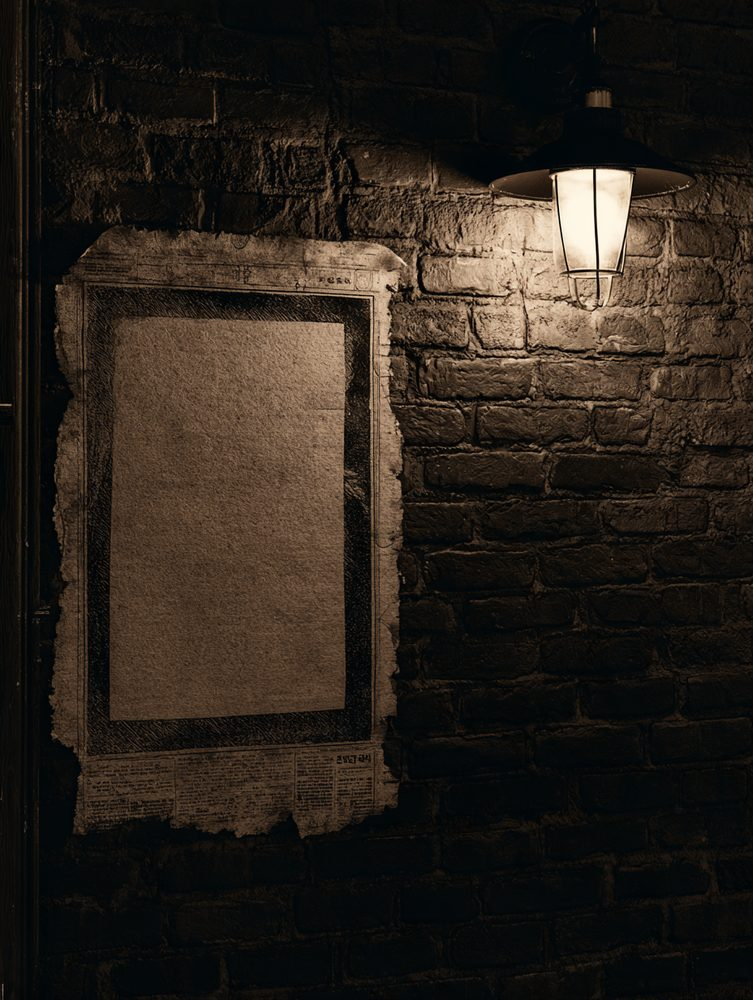
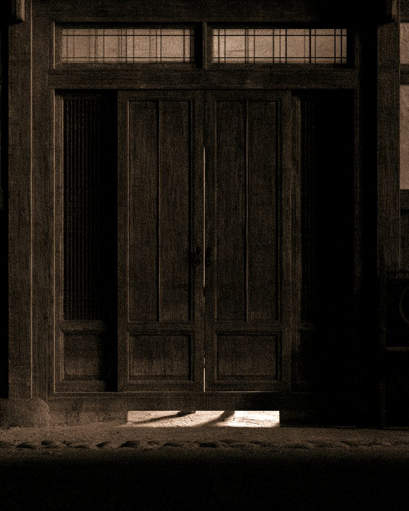

심인일
동료를 차즘

차즘 중
- 나이
- 불문. 단, 자정 넘어 눈이 반짝이는 자
- 인상
- 밤눈이 밝고, 낡은 신문 냄새를 조와함. 차를 물처럼 마심
- 버릇
- 마감 전날이면 행방이 묘연해짐. 마감 당일엔 더 묘연해짐
- 간 곳
- 제이집 제작실로 갓스리라 짐작함. 혹은 이불 속
이 사람을 아시는 이, 혹은 이 사람이 당신이면 본사로 통지하시오. 후사함(후사는 크레딧 한 줄 · 식은 차 한 잔 · 편집장의 고개 끄덕임 한 번)
니저진 신문 한 줄에서
다시 깨여나는
경성의 이약이
京城野錄
소화 십일 년 시월 칠일 수요일
시방 오후 한 시 오십삼 분
1936 · 90년 전 오늘날
이날 본보는 발행되지 못하엿다 — 정간 중
밤이 깁허지면 니저진 사건이 깨여나나니라
신문 한 줄로부터 비롯하는 경성의 괴사심인 광고 · 광고면 제삼 단
녯 신문 광고란에는 집 나간 이를 찻는 「심인」 광고가 실렷소. 경성야록도 사람을 찻소. 이번엔 우리 쪽에서.
심인일

이 사람을 아시는 이, 혹은 이 사람이 당신이면 본사로 통지하시오. 후사함(후사는 크레딧 한 줄 · 식은 차 한 잔 · 편집장의 고개 끄덕임 한 번)
심물
어젯밤 자정, 편집국 창으로 날아감. 줍는 이는 읽지 말고 돌려주시오. 읽엇거든 감상도 함께. 오자는 못 본 체하시오.
심인
마감 전까지는 분명 잇섯슴. 인상은 부지런함. 「오 분만」이라 말한 뒤로 세 시간째 소식 업슴.
심인이

이 사람을 보신 이, 혹은 이 사람이 당신이면 본사로 통지하시오. 후사함(후사는 새 사건 소식 한 통. 광고 편지는 아니오, 맹세하오)
심묘
털빛은 먹색. 「ㄱ」 자 활자를 물고 나감. 고양이도 고양이지만, 솔직히 ㄱ이 더 급함.
심물
첫째와 둘째도 아즉 못 차잣슴. 넷째는 사지 안키로 함. 비 오는 날 문 압헤 갓다 두시오.

부 고
향년 칠 세. 생전에 하로 사백 잔을 내렷고, 단 한 번도 마감을 탓하지 안앗소.
상주 · 야근조 일동 조화는 사절, 원두는 환영

현상 수배
인상 — 매일 밤 온다. 늦은 적이 한 번도 업다. 문을 잠가도 온다.
자정까지 --:--:--
이 자를 보거든 — 피하지 마시오. 소용업소.
사 과
본보가 귀신이라 보도한 흰 그림자는 편집장의 엄지손가락이엇소. 귀신께 깁히 사과드리오.
— 정정의 정정: 엄지손가락이 아니엇소. 편집장은 그날 장갑을 끼고 잇섯소.

심 인
똑, 똑, 똑. 열어 보니 업섯소. 둘째 밤에도 업섯소. 셋째 밤엔 열지 안앗소.
짐작 가는 이는 이 칸을 두드려 보시오.
※ 심인 광고의 틀(인상 · 간 곳 · 후사함)은 1920~30년대 동아일보 광고란에서 빌렷소. 이 면의 광고는 모두 경성야록이 지어 낸 것이오 (재현). 통지는 화면 시연용이며 실제로 접수되지 안소.